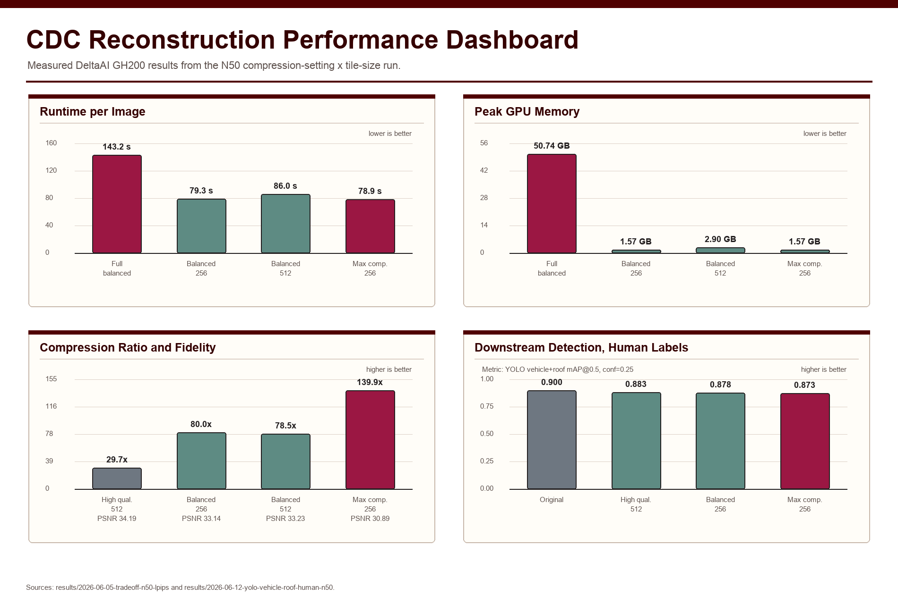
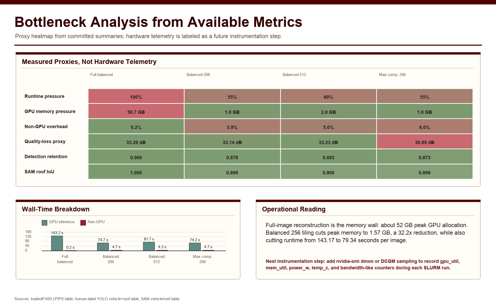
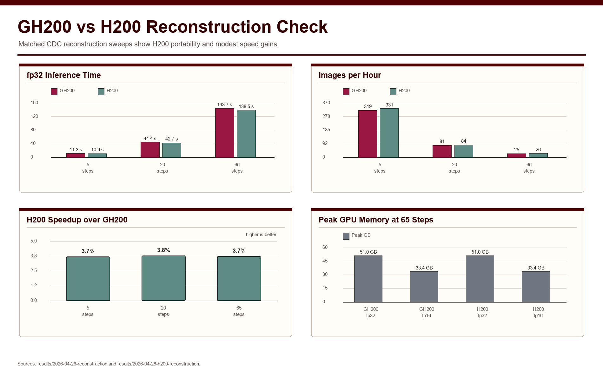
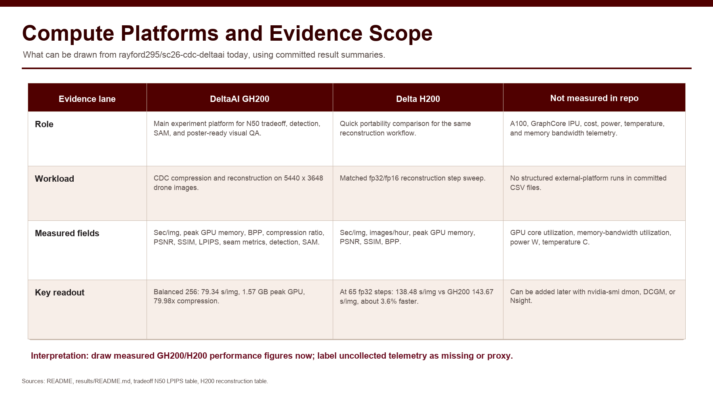

1Institute for a Disaster Resilient Texas
2Department of Geography
3Department of Marine and Coastal Environmental Science
4Department of Computer Science and Engineering
Texas A&M University
High-resolution imagery is used more often for community asset management, environmental monitoring, and disaster response. These images preserve fine details such as buildings, roads, vehicles, vegetation, and damage patterns, but they also create a storage problem. A single field mission can generate hundreds of gigabytes of data, which increases long-term storage and transfer costs. To reduce this storage burden, this study evaluates an existing conditional diffusion compression (CDC) workflow for high-resolution image storage and reconstruction on GPU supercomputers. We do not propose a new compression model. Instead, we study how CDC behaves as an HPC workload and identify practical operating points that balance compression ratio, GPU memory use, reconstruction speed, image quality, and downstream analysis utility.
Using 100 RGB drone images from Galveston, Texas, we test different CDC checkpoints and tiled reconstruction settings on NCSA DeltaAI GH200. The balanced checkpoint with 256×256 tiled reconstruction reduces peak GPU memory from 51.96 GB to 1.57 GB and lowers reconstruction time from 143.17 to 79.34 seconds per image compared with full-image reconstruction. This setting keeps a 79.98× compression ratio while preserving useful image quality and downstream detection and segmentation performance. The results show that CDC can support long-term storage of high-resolution imagery when reconstruction is treated as a system optimization problem. A practical HPC setting should report on storage savings, GPU memory, throughput, image quality, visible artifacts, and downstream utility together.
The recommended operating point—balanced checkpoint b00064 with 256×256 tiled reconstruction—converts a memory-heavy diffusion job into a low-memory, higher-throughput workflow while preserving disaster-relevant image utility:
| Setting | Sec./img | Img/hr | Peak GB | Ratio | F1 | Roof IoU |
|---|---|---|---|---|---|---|
| High quality 512 | 88.51 | 40.7 | 2.96 | 29.73× | 0.8805 | 0.9001 |
| Balanced 256 | 79.34 | 45.4 | 1.57 | 79.98× | 0.8705 | 0.8989 |
| Max comp. 256 | 78.91 | 45.6 | 1.57 | 139.89× | 0.8679 | 0.8956 |




@misc{kim2026cdc_hpc,
title = {Optimizing HPC Performance for CDC-Based Storage and
Reconstruction of High-Resolution Imagery},
author = {Kim, Jooho and Yang, Yifan and Shakya, Anish and Kelly, Jacob},
year = {2026},
note = {SC26 poster, under review},
url = {https://github.com/rayford295/drone-compression-hpc}
}
The formal citation will be updated once the SC26 poster / project paper is published.